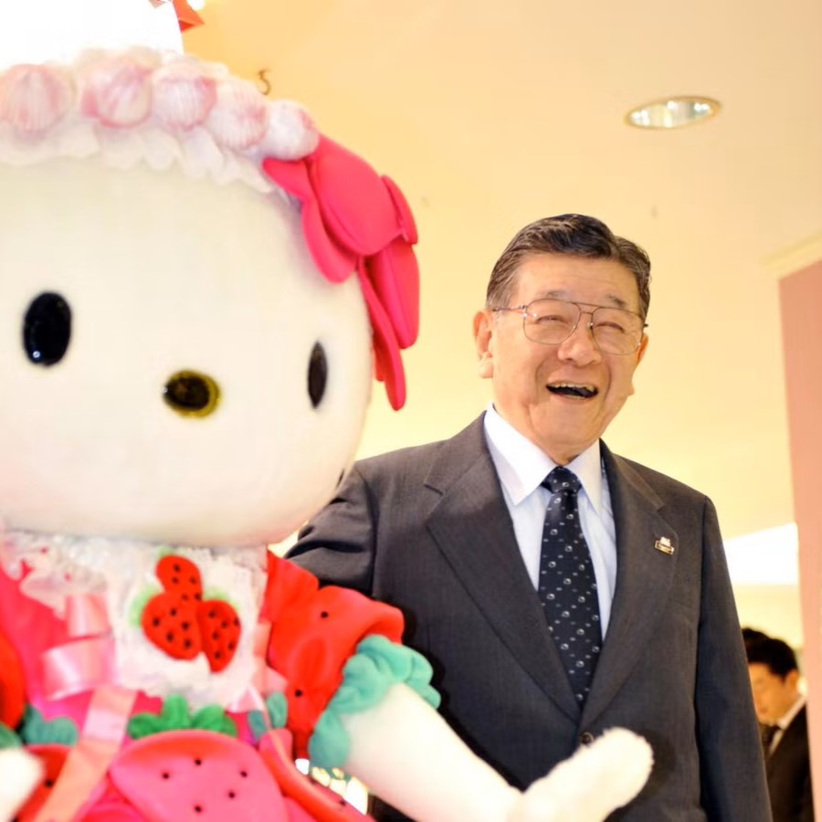

辻 慎太郎は日本の起業家です。元公務員で、ハローキティなどのキャラクターグッズで知られるサンリオの創業者兼社長。

清水裕子は日本のデザイナー、ハローキティのクリエーターです。武蔵野美術大学卒業。 1974年にサンリオでハローキティを発売。
株式会社サンリオカンパニーは、日本の大衆文化のかわいいセグメントに焦点を当てた製品の設計、ライセンス供与、および製造を行う日本の会社です。
辻 慎太郎は日本の起業家です。元公務員で、ハローキティなどのキャラクターグッズで知られるサンリオの創業者兼社長。
清水裕子は日本のデザイナー、ハローキティのクリエーターです。武蔵野美術大学卒業。 1974年にサンリオでハローキティを発売。
株式会社サンリオカンパニーは、日本の大衆文化のかわいいセグメントに焦点を当てた製品の設計、ライセンス供与、および製造を行う日本の会社です。
フルネームのキティ・ホワイトでも知られるハローキティは、日本の会社サンリオが作成したキャラクターです。口ひげ、耳、名前にもかかわらず、サンリオはハローキティを赤いリボンを付けた、特に口のない日本のボブテイルの若いギジンカとして描いています.
マイメロディは、ハローキティの親友であるマイメロとして頻繁に短縮され、日本のキャラクタリゼーション会社サンリオの白いウサギです.
クロミはマイメロディのライバルで、正面にピンクの頭蓋骨と黒い悪魔の尻尾が付いた黒い道化師の帽子をかぶった白いウサギまたはインプのような生き物です.クロミの気分に合わせてドクロの表情が変化。